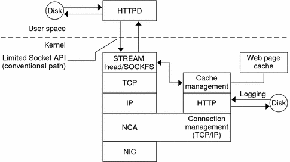

Previous
Previous
Using the SSL Kernel Proxy in Zones
The SSL Kernel Proxy works in zones with the following limitations:
All of the kernel SSL administration must be done from the global zone. The global zone administrator needs access to the local zone certificate and key files. The local zone web server can be started once the service instance is configured using the ksslcfg command in the global zone.
A specific host name or IP address must be specified when running the ksslcfg command to configure the instance. In particular, the instance can not use INADDR_ANY.
In the local zone, first stop the web server. In the global zone do all of the steps to configure the service. To create a instance for a local zone called apache-zone, use the following command:
# ksslcfg create -f pem -i /zone/apache-zone/root/keypair.pem -p /zone/apache-zone/root/pass \
-x 8080 apache-zone 443In the local zone, run the following command to enable the service instance:
# svcadm enable svc:/network/http:apache2
Caching Web Pages (Reference)
The following sections cover the files and the components that are needed to use NCA. Also, specifics about how NCA interacts with the web server are included.
NCA Files
You need several files to support the NCA feature. Many of these files are ASCII, but some of the files are binary. The following table lists all of the files.
Table 2-1 NCA FilesFile Name | Function |
|---|---|
The path name for the NCA device. | |
File that lists all physical interfaces that are configured on the server. | |
File that lists all host names that are associated with the server. Entries in this file must match entries in /etc/hostname.* files for NCA to function. | |
Script that starts the NCA server. This script is run when a server is booted. | |
Script that starts NCA logging. This script is run when a server is booted. | |
File that lists the interfaces on which NCA is run. See the nca.if(4) man page for more information. | |
File that lists configuration parameters for NCA. See the ncakmod.conf(4) man page for more information. | |
File that lists configuration parameters for NCA logging. See the ncalogd.conf(4) man page for more information. | |
File that lists the IP addresses and the ports for NCA. See the ncaport.conf(4) man page for more information. | |
Command that is used to convert data in the log file to the common log format. See the ncab2clf(1) man page for more information. | |
Command that is used to configure NCA to run on multiple interfaces during boot. See the ncaconfd(1M) man page for more information. | |
Library that uses AF_NCA sockets instead of AF_INET sockets. This library must be used on web servers that use AF_INET sockets. See the ncad_addr(4) man page for more information. | |
File that holds the log file data. The file is in binary format, so do not edit it. | |
The door path name. |
NCA Architecture
The NCA feature includes the following components.
Kernel module, ncakmod
Web server, httpd
The kernel module ncakmod maintains the cache of web pages in system memory. The module communicates with a web server, httpd, through a sockets interface. The family type is PF_NCA.
The kernel module also provides a logging facility that logs all HTTP cache hits. NCA logging writes HTTP data to the disk in binary format. NCA provides a conversion utility for converting binary log files to common log format (CLF).
The following figure shows the flow of data for the conventional path and the path that is used when NCA is enabled.
Figure 2-1 Data Flow With the NCA ServiceNCA to Httpd Request Flow
The following list shows the request flow between the client and the web server.
An HTTP request is made from the client to the web server.
If the page is in cache, the in-kernel cache web page is returned.
If the page is not in cache, the request goes to the web server to retrieve or update the page.
Depending on the HTTP protocol semantics that are used in the response, the page is cached or not. Then the page is returned to the client. If the Pragma: No-cache header is included in the HTTP request, the page is not cached.